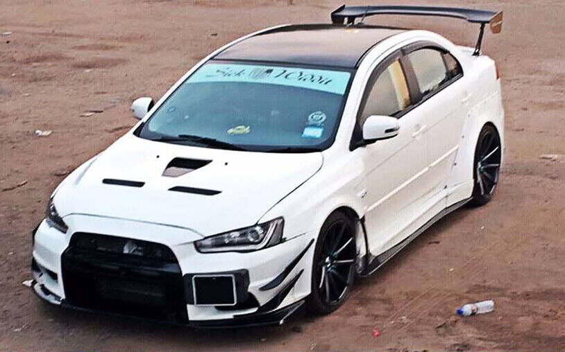
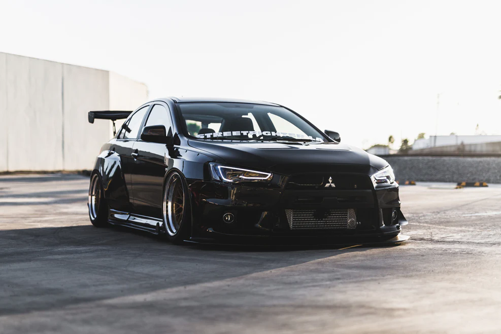

Mitsubishi-lancer
Lancer

Historias e gerações
Origem (1973): Surgiu como um sedã compacto econômico, concorrendo com Toyota Corolla e Honda Civic.
Evolução: Teve 10 gerações até 2017, com destaque para os modelos esportivos e o lendário Lancer Evolution (1992–2016).
Fim da produção: Foi descontinuado em 2017, exceto em alguns mercados como Taiwan.
Principais Modelos
Lancer Evolution (Evo)
Motor: Turbo 2.0L 4G63T (4 cilindros, tração integral).
Destaque: Versões como o Evo VIII, IX e X foram usadas em rally e tunagem.
Potência: Até 303 cv (Evo X FQ-400).
Lancer Ralliart
Versão mais acessível do Evo, com motor 2.0L turbo e câmbio automatizado SST.
Lancer GLX / GLS
Versões populares com motores 1.6L, 1.8L ou 2.0L aspirados, focadas em economia.
Lancer Sportback
Versão hatchback (lançada em 2009).
Motorizações (últimas gerações)
Aspirados: 1.6L (117 cv), 1.8L (140 cv), 2.0L (148 cv).
Turbo: 2.0L MIVEC Turbo (Evo X: 291 cv).
Diesel: Em alguns mercados, como o 2.3L DiD (150 cv).
Tecnologia e Diferenciais
S-AWC (Sistema de tração integral do Evo).
Transmissão: Câmbio manual ou automatizado SST (Evo e Ralliart).
Design agressivo: Grade "Jet Fighter" (geração 2007–2017).
Curiosidades
Rally: O Lancer Evo dominou o WRC nos anos 90 e 2000 com pilotos como Tommi Mäkinen.
Filmes: Famoso em Velozes e Furiosos (Brian O'Conner dirige um Evo VII).
Culto: Tuners adoram o Evo por seu potencial de modificações.
Fim da Linha
A Mitsubishi encerrou a produção do Lancer para focar em SUVs e elétricos, mas seu legado permanece, especialmente o Evo, que ainda é cobiçado no mercado de usados.🥲
